Warsaw Plaza Hotel jako flagowy obiekt przy Lotnisku Chopina.
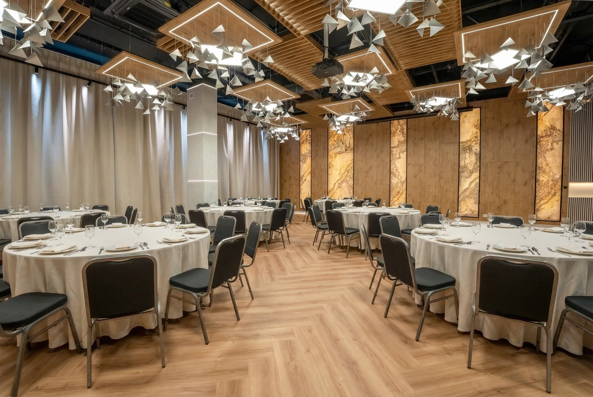
Konferencje | eventy | bankiety | integracje | private dining
MICE w CFI Hotel's Group
Hotele, obiekty noclegowe, restauracje i nowe przestrzenie eventowe
Narracja sprzedazowa
Biznes i wypoczynek w jednym miejscu
Projekt pokazuje CFI jako partnera dla organizatorow, ktorzy potrzebuja nie tylko sali, ale calego ekosystemu: noclegow, gastronomii, bankietu, przestrzeni plenerowej, after-eventu i lokalnej atmosfery miasta.
Premier + Express jako duze centrum konferencyjne.
Konferencje pod Warszawa, patio, teren zielony i bankiety.
Destination MICE z historia, SPA i duza skala eventowa.
Nowosci i mocne akcenty
Nowe produkty eventowe w Lodzi
Lodzi nie pokazujemy tylko jako bazy noclegowej. To osobny ekosystem MICE: hotele, sala 99 Hz, Tektura, restauracje i private dining.
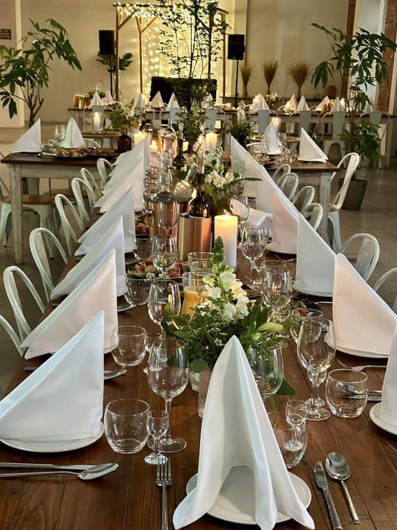
Nowosc | event space
Tektura / Boho by Farina Bianco
Kreatywna przestrzen na gale, premiery marek, konferencje, szkolenia, warsztaty, wernisaze, pokazy mody i spotkania branzowe.
Citi Hotel's Lodz
99 Hz
Przestronna, dobrze oswietlona sala na 1. pietrze: konferencje, szkolenia, eventy firmowe, gale i bankiety.
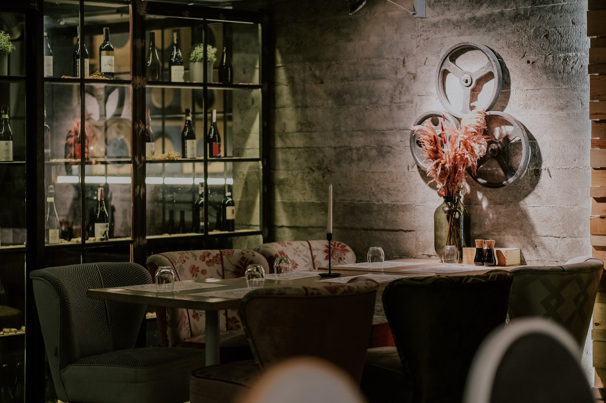
Event dining
Farina Bianco
450 miejsc, VIP Room do 40 osob, Time do 140, Quality do 110, laczone wydarzenia do 250 osob.
Podzial katalogu
Miasta i lokalizacje
Katalog graficzny
Potencjal wedlug miast
Hotele, obiekty noclegowe, restauracje i przestrzenie eventowe w jednym widoku.
Warszawa / Raszyn
Lotnisko, stolica i podwarszawski teren eventowy
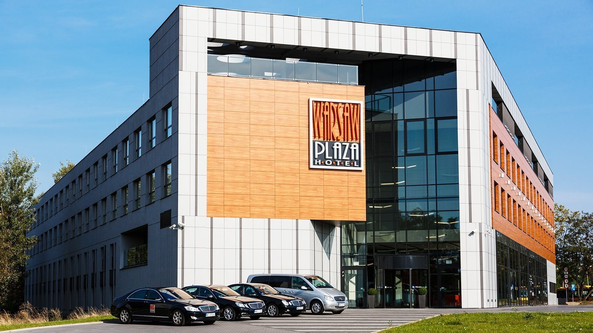
Hotel konferencyjny
Warsaw Plaza Hotel
17 sal, eventy do 800 osob, 146 pokoi, 292 miejsca noclegowe, parking i logistyka przy lotnisku.
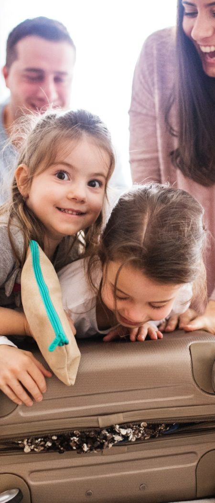
Konferencje pod Warszawa
Falenty Biznes i Wypoczynek
13 sal, ok. 2000 m2, bankiety do 400 osob, patio, teren zielony, basen i eventy plenerowe.
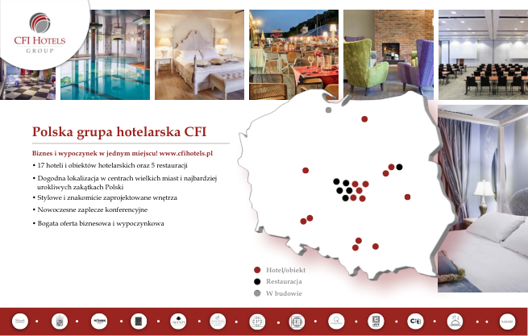
Restauracja historyczna
U Kucharzy w Arsenale
Warszawska restauracja w budynku Arsenału, dobry format na kolacje biznesowe, przyjęcia i wydarzenia z charakterem.
Krakow
Duzy hub konferencyjny Premier + Express
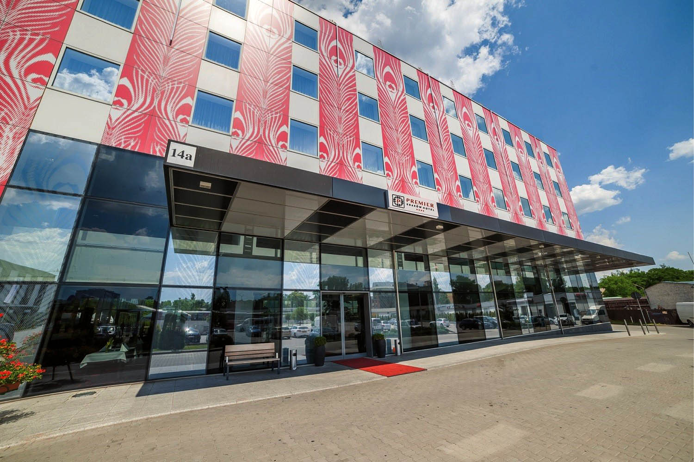
Centrum konferencyjne
Premier Krakow Hotel
1420 m2, 9 sal, 169 pokoi i 4 apartamenty, parking 230 miejsc, basen i sauna.
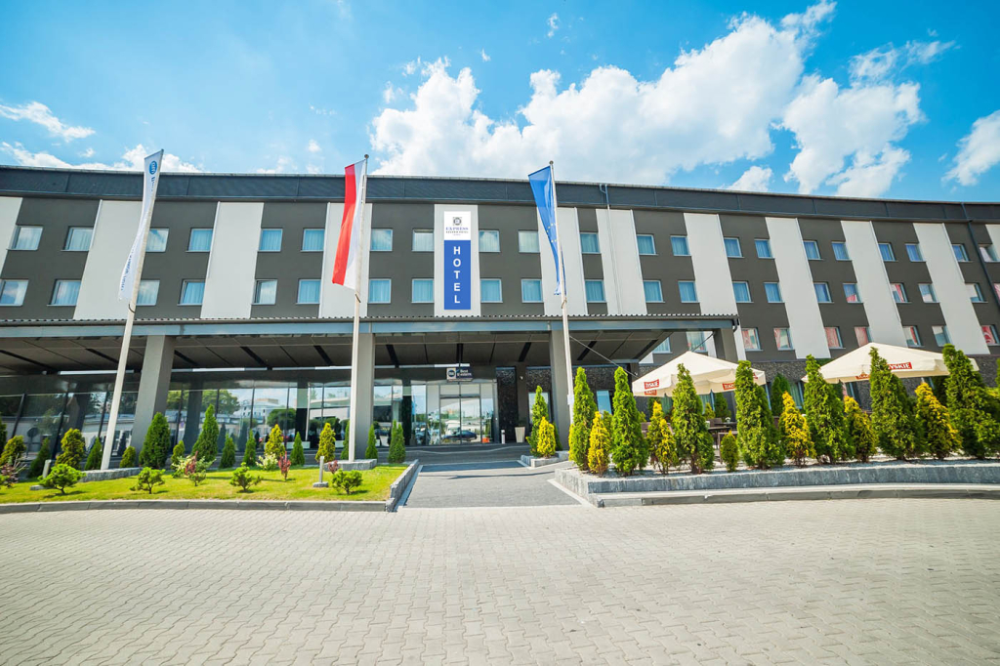
Hotel + sale
Express Krakow Hotel
705 m2, 5 sal, sala Bursztynowa ponad 400 m2, 179 pokoi i zaplecze Premier Krakow.
Lodz
City MICE, 99 Hz, Tektura i restauracje eventowe
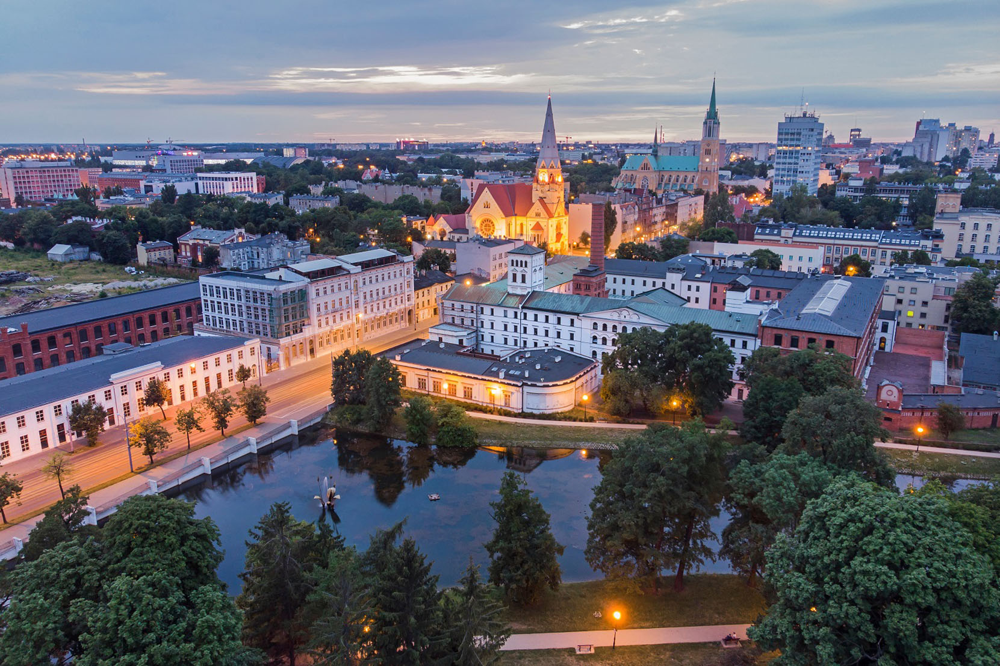
Hotel + sala 99 Hz
Citi Hotel's Lodz
114 pokoi, 230 miejsc noclegowych, sala 99 Hz na konferencje, szkolenia, gale i bankiety.
Nowosc eventowa
Tektura / Boho
Gale, premiery produktow, konferencje, warsztaty, networking, wernisaze i pokazy mody.
Duzy event dining
Farina Bianco
450 miejsc, VIP Room, sale Time i Quality, laczone wydarzenia do 250 osob.
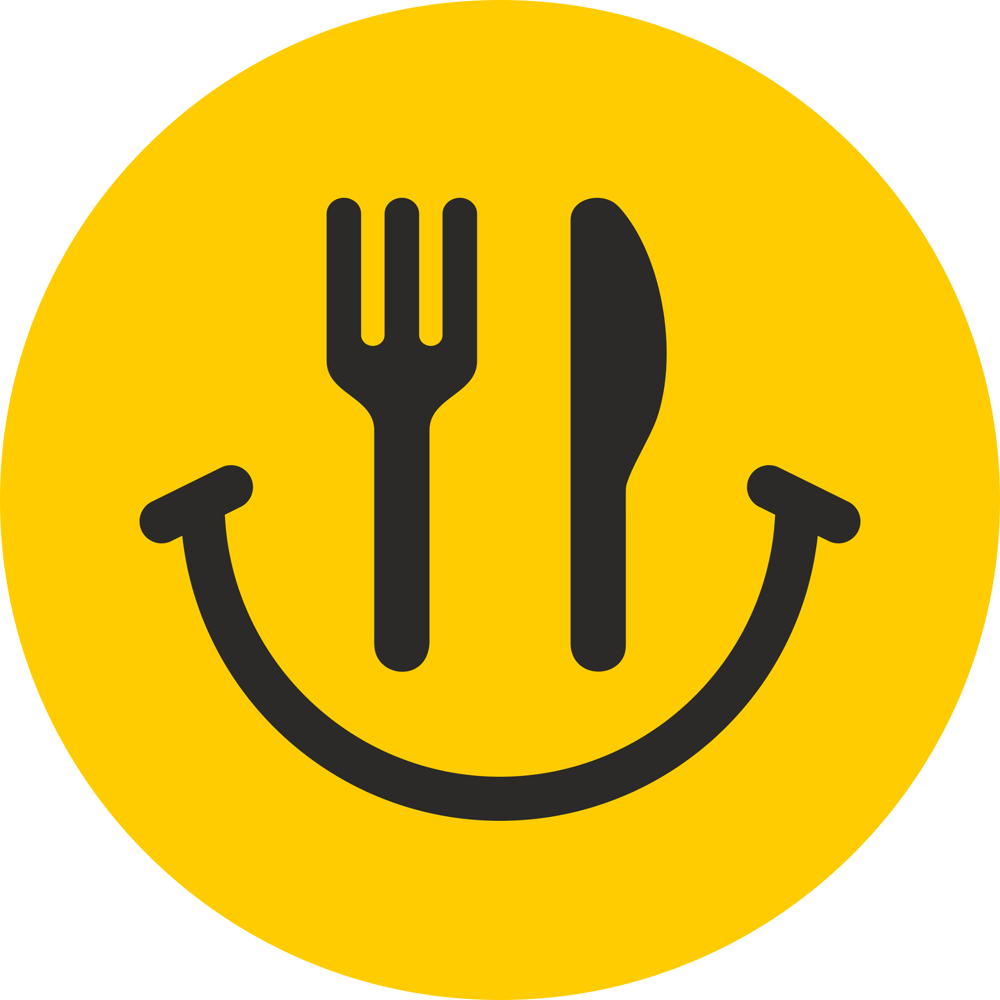
Bankiety i kuchnia polska
Gesi Puch
Sala Bankietowa do 200 osob, Kameralna do 60, Restauracyjna do 50, pofabryczny klimat.
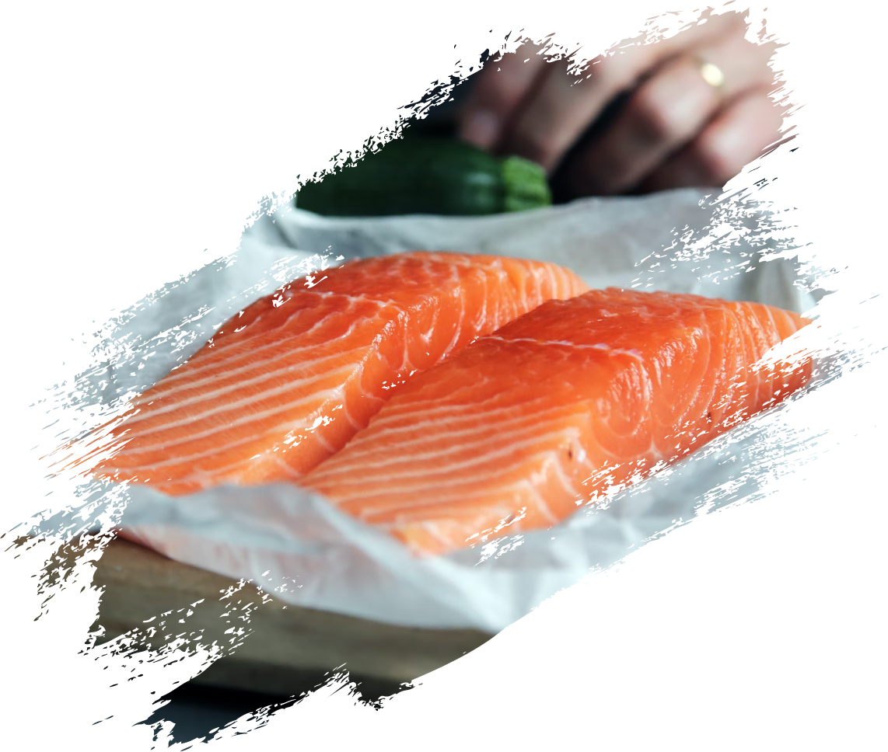
Private dining
TABU Sushi
HANA do 18 osob, MIRA dla 10-20 osob, executive dinner i kameralny networking.
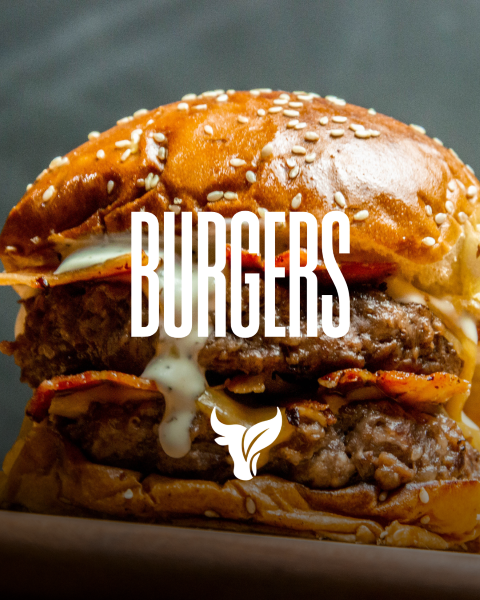
Miejski event dining
Rozlam
After-event, integracje, kolacje biznesowe, wigilie firmowe, szkolenia, lunche i bankiety.
Baza miejska
Boutique Hotel's Lodz
Obiekty w centrum, 4 sale przy Pilsudskiego, baza noclegowa dla grup i wydarzen miejskich.
Poznan
Kameralny biznes blisko A2 i MTP
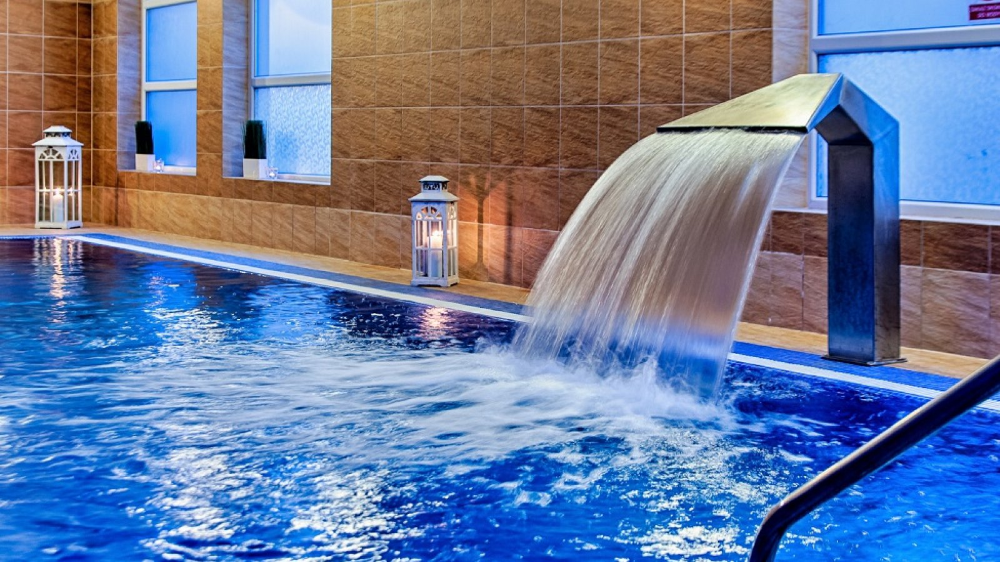
Hotel biznesowy
Grand Royal Hotel
3 sale, ponad 240 m2, 61 pokoi i 5 apartamentow, wellness, dobra lokalizacja przy A2.
Kazimierz Dolny
Destination MICE z historia
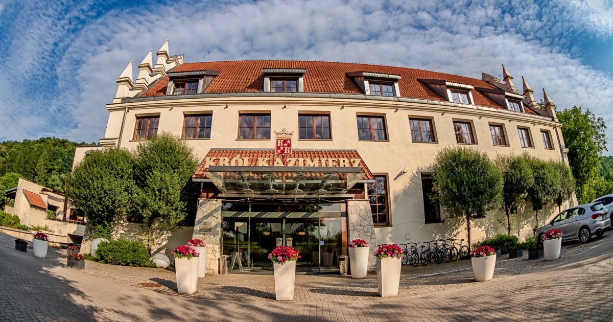
Destination event
Krol Kazimierz Hotel & SPA
Ponad 1600 m2, 8 sal, wydarzenia do 1000 osob, ok. 250 miejsc noclegowych, patio i SPA.
Mazury / Worliny
Konferencje z natura, wellness i integracja
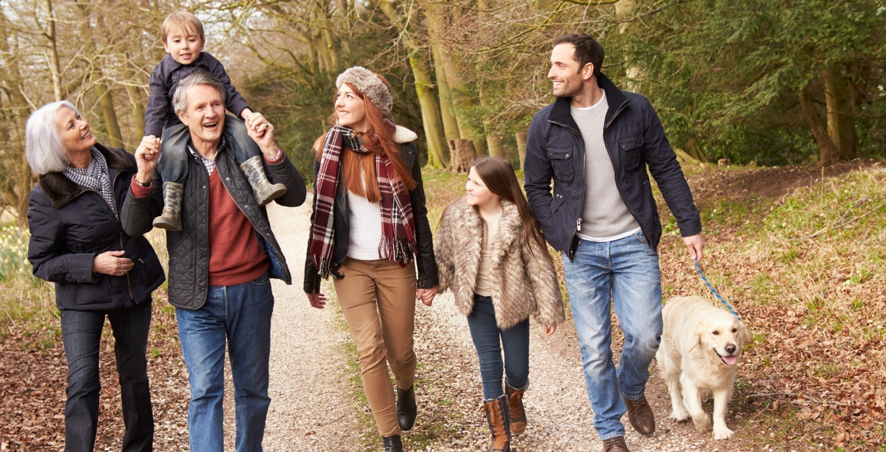
Incentive i integracje
Masuria Hotel & SPA
6 sal, 550 m2, do 400 osob, 65 pokoi, prywatna plaza, pomost, SPA, basen i wellness.
Wroclaw
Miejska baza pobytowa dla biznesu
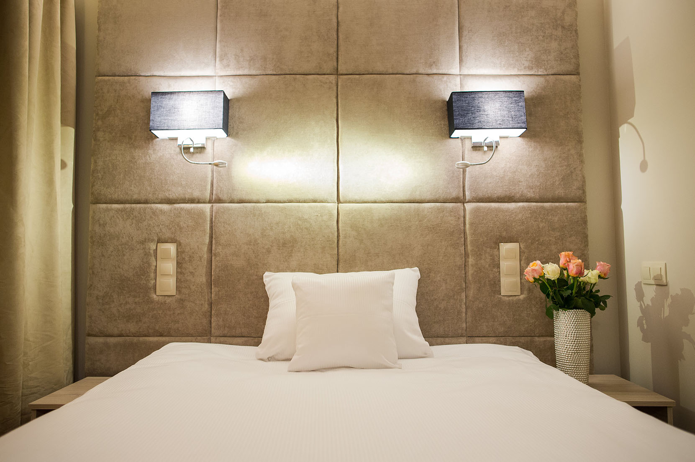
City business stay
Citi Hotel's Wroclaw
63 nowoczesne pokoje, biznesowa czesc Wroclawia, pobyty sluzbowe i baza dla wydarzen miejskich.
Slask / Sosnowiec / Bytom
Kameralne spotkania i noclegi biznesowe
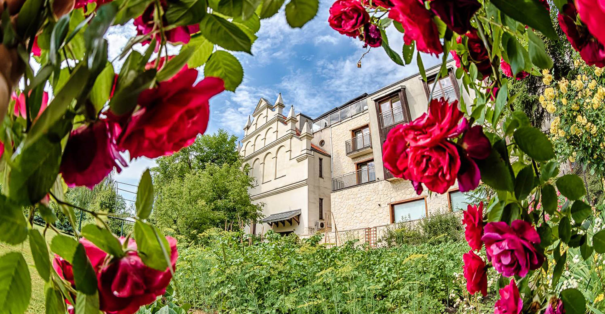
Kameralne MICE
Art Hotel's Sosnowiec
2 sale, 75 m2, do 80 osob, 28 pokoi, ok. 10 km do Katowic i 30 minut do lotniska Pyrzowice.
Event dining
Restauracje jako przewaga MICE
Restauracje CFI nie sa dodatkiem do hotelu. To osobny produkt: bankiet, after-event, private dining, gala, kolacja zarzadu albo spotkanie integracyjne.
Kolejny krok
Wybor finalnych zdjec i produkcja PDF / PowerPoint
Ten projekt strony moze byc baza do prezentacji zarzadowej, katalogu PDF albo interaktywnej strony dla handlowcow. Wersja finalna powinna potwierdzic liczby WPH i Falent oraz wybrac po 1-3 kadry hero dla kazdego obiektu.